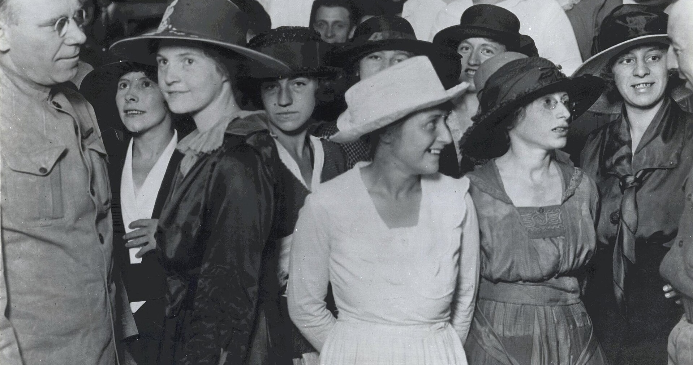
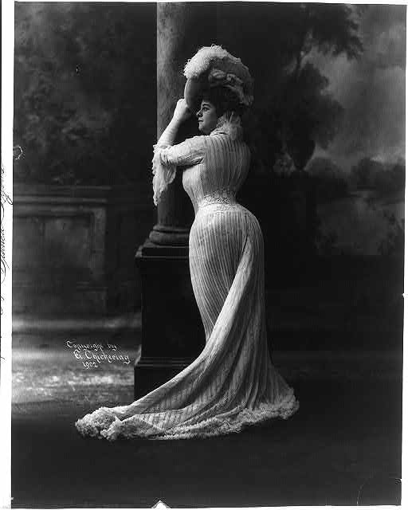
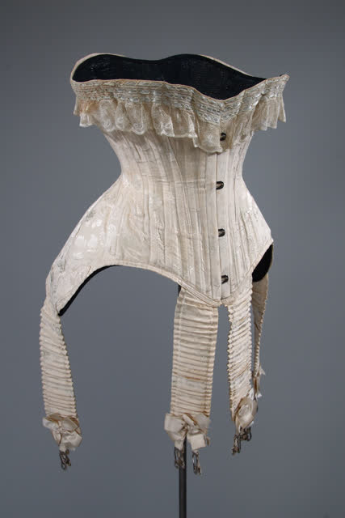
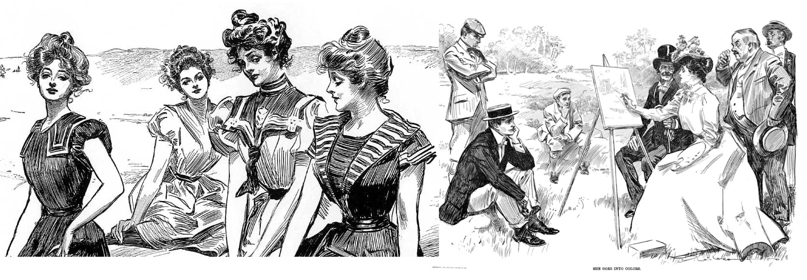
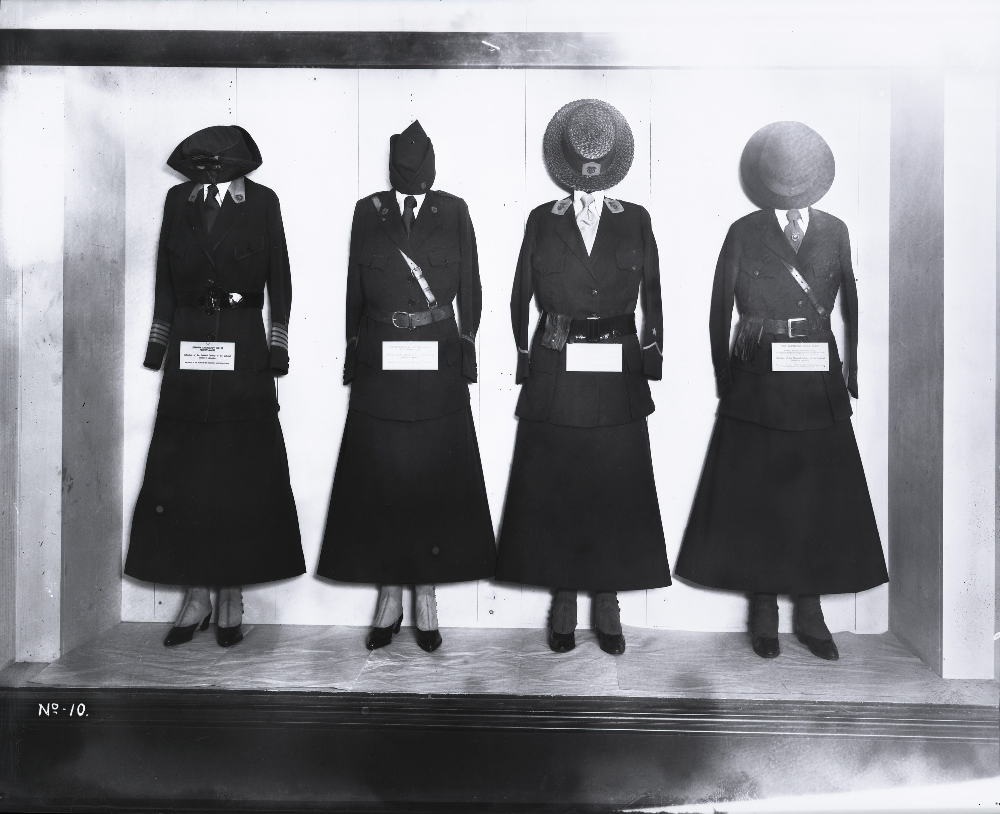
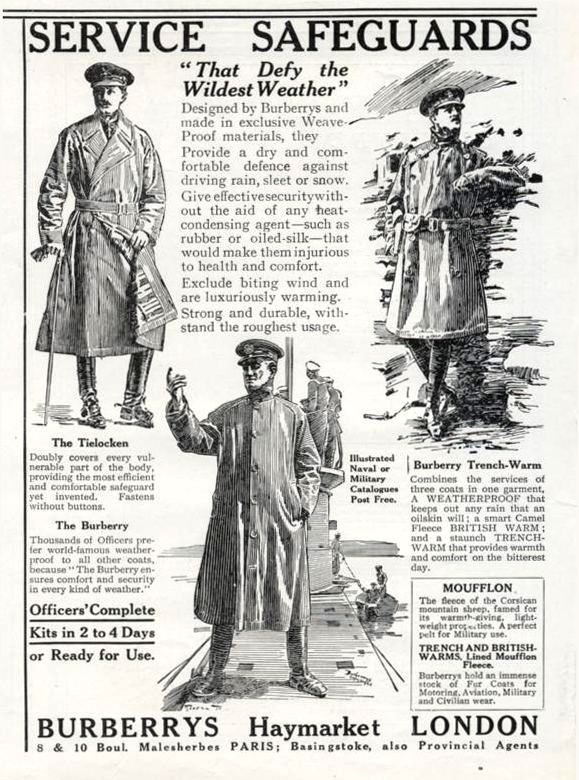

1900s–1910s
Edwardian Elegance
Wartime Transition

S-Bend Corset (1900-1905)

Elmer Chickering. Bianca Lyons, ca. 1902. Library of Congress.

Corset, 1900–1905. Musée McCord Stewart.
Gibson Girl: “Ideal Woman” (1900-1906)

“Gibson Girls” illustrated by Charles Dana Gibson,
1900-1906.
The “Gentleman’s Tailor” (1914)

The Gentleman’s Tailor: Fashions for
Spring and Summer, 1914. The Met.
London Street Style: Edwardian Era (1905-1908)

Edward Linley Sambourne. Photographs, 1905–1908.
WW1 Uniforms (1914-1918)

Collection of the National Museum of American History,
Smithsonian Institution.

Burberry Advertisement 1916. The Sphere.